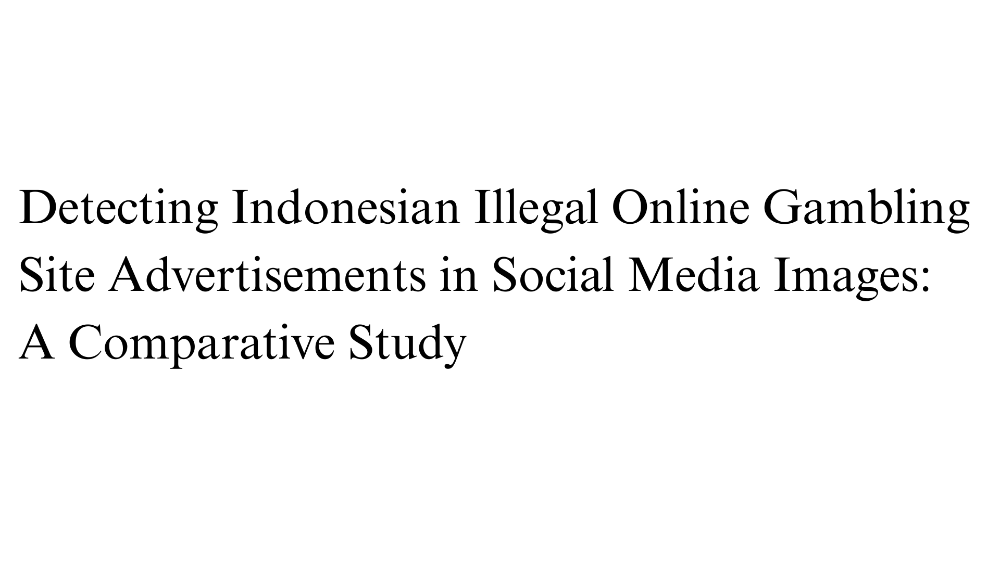

Jun 2026

I am thrilled to announce that my research paper has been accepted for publication at the 2026 International Conference on Computer Science and Computational Intelligence (ICCSCI). This milestone represents a significant achievement in my academic journey.
The paper, titled "Detecting Indonesian Illegal Online Gambling Site Advertisements in Social Media Images: A Comparative Study", was written as part of my final project to complete my Bachelor's degree. This achievement would not have been possible without the guidance and support of my advisor, Pak Gregorius Natanael Elwirehardja, who has provided meaningful insights and encouragement throughout the research process.
As written in the title, the paper focuses on exploring the use of machine learning and deep learning methods to detect Indonesian illegal online gambling site advertisements in social media images. The paper compares more than just the performance of the models, but also their resource efficiency, which is an important aspect to consider when deploying machine learning models in real-world applications.
This paper was intended to provide a solution to Indonesia's growing online gambling problem, which has been a significant issue in the country. With the rise of online gambling, it has become increasingly important to develop effective methods for detecting and combating illegal gambling activities, including the spread of its promotional content.
With this paper, I hope to further show that data science is more than just about achieving high performance metrics and maximizing profits, but also about bringing real-world impact and solutions to the problems that we face in our society.